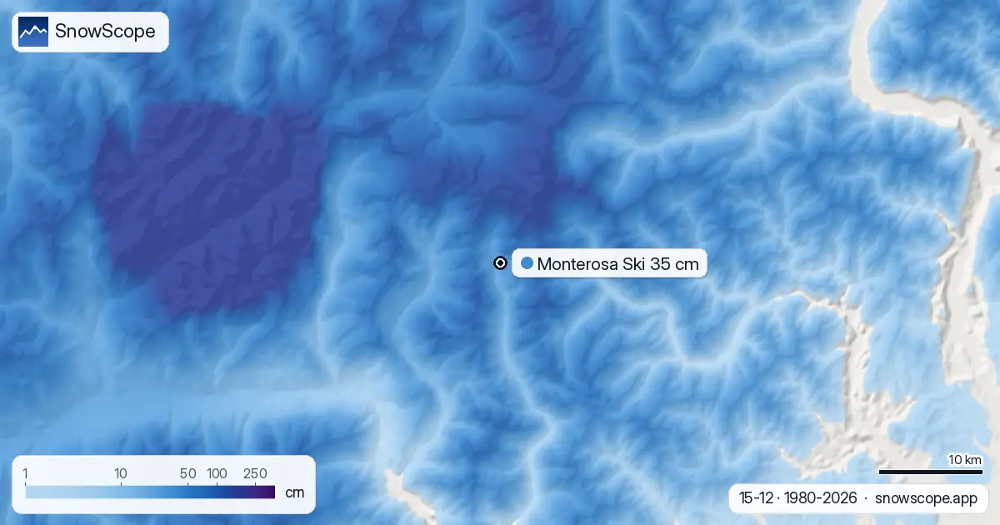
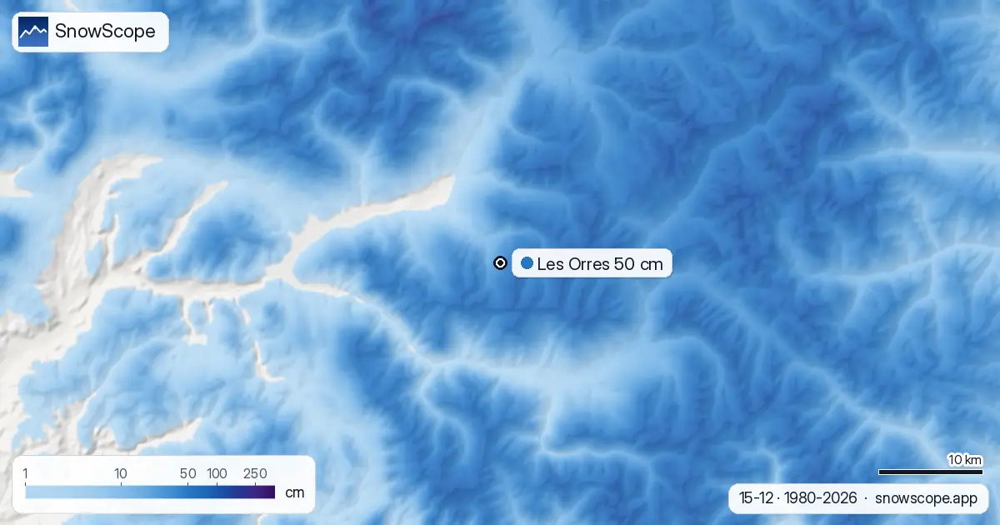
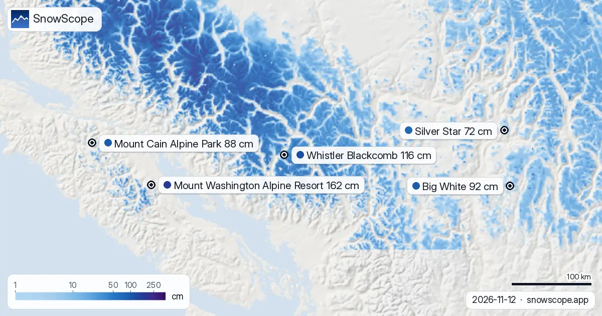
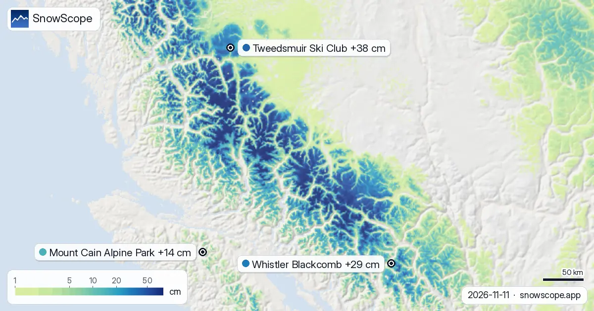
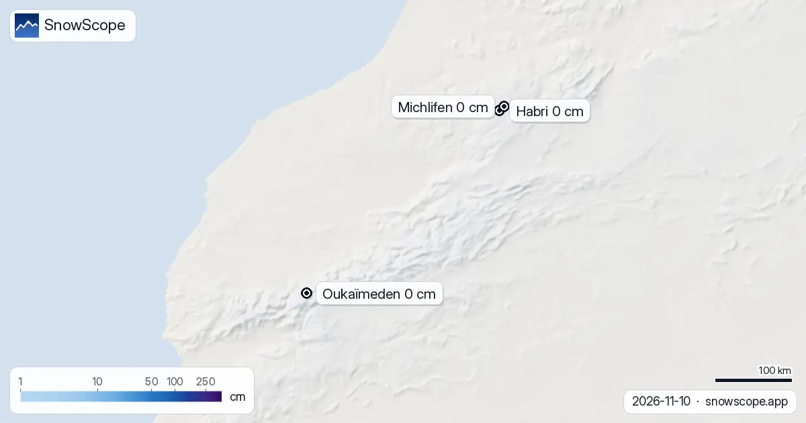
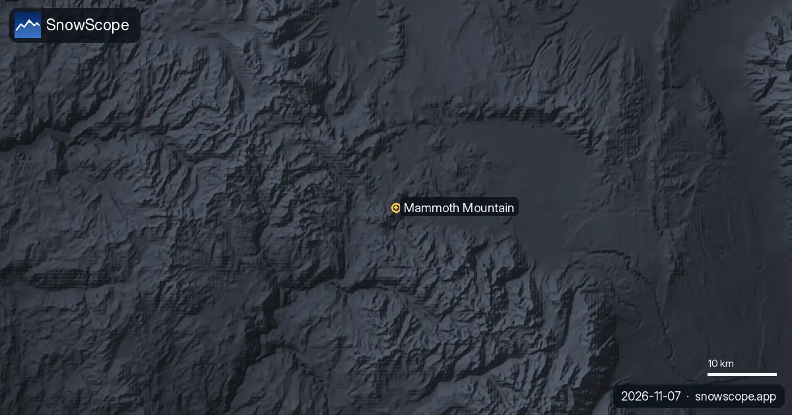

Snow reports · Where to ski
Daily snow reports for skiers: where the snow is, what is coming and where to ski, from the SnowScope snow map and measuring stations. Every number comes from that day's data.

Picking a resort in the US Northeast comes down to three things: how deep the snow is, how fresh it is, and what is still to come. We weighed the …

Les Deux Alpes: how much fresh snow fell? 38 cm in 72 hours (15 November). Where did the most fresh snow fall in the Alps? La Grave got 41 cm of new …

Manning Park Resort: 11 cm of fresh snow in 72 hours (Western Canada, 15 November). Whistler Blackcomb got 82 cm of new snow in the last 72 hours, …

Krvavec December skiing: day pass EUR 47, 6 days EUR 205, yet only 13 cm at mid-mountain on a typical 15 December and 11 of 46 winters bare that day.

Ski 157 km of mapped runs in Serre Chevalier where the top of the mountain has a 100 % chance of snow by mid-December.

Turracher Höhe in December: 23 cm mid-mountain on a typical 15 December, 39 % of winters with 30 cm before Christmas; 6-day low-season pass EUR 353.

Hochkar December skiing: day tickets seen from EUR 32.90 to 47.90 on December dates; 38 cm mid-mountain on a typical 15 December, falling since the 1980s.

Idre Fjäll December skiing: 32 cm mid-mountain on a typical 15 December; 65 % of winters with 30 cm in mid-December, 76 % in Christmas week. Honest odds.

Ten European ski resorts ranked for December value, led by Les 2 Alpes with 75 cm of mid-mountain snow.

Boí Taüll starts at 2039 m and beats Baqueira Beret on day-pass price, though early December snow still takes some patience.

Sälen December skiing: 28 cm on a typical 15 December and 48 % of winters with 30 cm in mid-December, down from the 1980s; Trysil next door does better.

Orcières Merlette offers a high base at 1826 m and a 6-day pass from 227 EUR, making it a reliable choice for a December ski trip.

Is Alpe d'Huez worth it for December 2026? We check the snow odds, the starting price of 58.00 EUR, and compare it with Les 2 Alpes.

Slovenia's ski passes are the cheapest (Krvavec EUR 205 for 6 days), but natural December snow there is rare; Lachtal, the Hochkar and the Mölltal glacier do better.

Cauterets offers 25 km of runs for 46 EUR, but our snow history shows that the best chance for cover is the last week of December.

Lachtal December skiing: day pass EUR 62, children up to 6 free, 46 cm mid-mountain on a typical 15 December, but a clear downward trend.

Ski the 131 km of runs in the Forêt Blanche this December with a six-day pass for 298 EUR.

Ruka December skiing: 6-day pass EUR 265, day EUR 58; 36 cm on a typical 15 December, but only 39 % of winters with 30 cm in the first week.

Monterosa Ski day passes run from 40.00 to 71.00 EUR online. In December the snow is up high: 124 cm usual at 3030 m, 6 cm at 1207 m.

Fellhorn/Kanzelwand December skiing: 63 cm at the 1965 m top on a typical 15 December, 10 cm at the bottom; Advent 6-day pass EUR 344.50 until 20 December.

Plan your December 2026 trip to Les Orres by matching weekly pass prices with our snow history of 46 past winters.

Hemavan December skiing: 82 cm mid-mountain on a typical 15 December, every winter with 30 cm there in mid-December; the deepest December of our Nordic set.

Compare Grandvalira and Spanish resorts in December 2026 for snow depths, lift heights, and prices starting from 49.00 EUR.

Pitztal Glacier December skiing: 87 cm mid-mountain on a typical 15 December, December snow up since the 1980s; day pass EUR 77, 6 days EUR 410.

For a low-cost December family ski week at Astún-Candanchú, aim for late December when top slopes hold good snow in 67 % of past winters.

Germany in December: the Zugspitze and the Fellhorn top had 30 cm in at least 9 of 10 winters in mid-December; Sudelfeld, Brauneck and the Feldberg rarely do.

Puy-Saint-Vincent pairs a 44 EUR adult 1-day pass with solid December snow higher up, compared here with its big neighbour Serre Chevalier.

Oppdal December skiing: 60 cm at the 585 m base on a typical 15 December, 93 % of winters with 30 cm there in mid-December, better than Trysil's base.

Grimentz-Zinal offers 71 km of runs and reliable high-altitude snow for your December trip, with 6-day passes at CHF 339.00.

Austria before Christmas: Galtür EUR 258 and Kühtai EUR 269 for 6 days with 30 cm in over 90 % of winters; glaciers cost more, small hills are a gamble.

Planning a December trip to Baqueira Beret? See our snow history, ticket prices starting at 70,00 € for a 1-day pass, and how it compares to Astún-Candanchú.

We rank French ski resorts by December snow odds and checked pass prices, starting from 36.00 EUR for an adult day pass in Les Karellis.

Galtür December skiing: 55 cm mid-mountain on a typical 15 December, 93 % of winters with 30 cm in mid-December; low-season day pass EUR 55.50 until 18 December.

Geilo December skiing: 57 cm mid-mountain on a typical 15 December, 96 % of winters with 30 cm in mid-December; day passes from NOK 590 (about EUR 56).

Grandvalira is often sold as cheap December skiing, yet natural snow at the base averages just 9 cm in past winters.

Hemsedal December skiing: 70 cm mid-mountain and 106 cm at the top on a typical 15 December, but 32 cm at the base; Geilo nearby from NOK 590 a day.

Hintertux Glacier December skiing: 98 cm at 3245 m and 52 cm mid-mountain on a typical 15 December; day pass EUR 82, 6 days EUR 399, small children free.

Compare December snow odds and checked lift pass prices starting at 40.00 EUR across Italian ski areas for your weekend drive.

Kühtai December skiing: 60 cm at the 1939 m base on a typical 15 December, and a low-season 6-day pass of EUR 269 until 18 December.

Les 2 Alpes reaches 3511 m for high snow in December 2026, with an adult 6-day pass priced at 266.50 EUR.

Les Karellis offers 45 km of runs and a 6-day adult pass for 191.00 EUR with a 98 % chance of snow mid-mountain in late December.

Levi December skiing: 38 cm on a typical 15 December, 91 % of winters with 30 cm in Christmas week, and December snow up, not down; day pass EUR 60, EUR 57 online.

Ski Livigno for 51.50 EUR per day before December 18 when the snow at the top reaches 30cm in 100 % of past winters.

Montgenèvre has 56 cm of usual December snow at its base, giving weekend drivers deeper early cover than Sestriere across the border.

Obertauern December skiing: 43 cm on a typical 15 December at mid-mountain, and a 6-day pass of EUR 331 before Christmas. Snow history and prices.

Pila above Aosta pairs a flat 60.00 EUR day pass with reliable December snow on its upper slopes.

Saas-Fee lifts reach 3556 m where our snow history shows 100 % of past winters have at least 30 cm of snow by mid-December.

12 Nordic resorts in December: Hemavan, Hemsedal and Geilo had 30 cm at mid-mountain in mid-December in 96-100 % of winters; Finnish day passes EUR 58-60.

Discover the calm slopes of St-Luc Chandolin where mid-mountain snow has reached 30 cm in 98 % of winters during late December.

Trysil December skiing: 44 cm mid-mountain on a typical 15 December, 83 % of winters with 30 cm in mid-December; prices are dynamic, so book early.

Valloire-Valmeinier offers 131 km of runs and a 98 % chance of 30 cm of snow at mid-mountain by mid-December.

Zugspitze December skiing: 122 cm at 2627 m on a typical 15 December, adult day ticket EUR 70.50 online; Garmisch-Classic below it EUR 69 with far less snow.

Mölltaler Gletscher December skiing: 66 cm at the 2103 m bottom lift and 128 cm mid-mountain on a typical 15 December; low-season 6-day pass EUR 332.

Can a cautious first-timer trust Courmayeur in December when mid-mountain averages 60 cm of snow across our past winters?

Åre December skiing: 40 cm mid-mountain on a typical 15 December, 89 % of winters with 30 cm in mid-December, but a sharp fall at the top since the 1980s.

The white area on the map dropped from 49,467 sq mi (128,120 km²) (11 November) to 49,050 sq mi (127,040 km²) today, and the forecast says …

Between now and 16 November we expect 5 in (12 cm) at Stowe, 4 in (11 cm) at Bolton Valley Resort and 4 in (10 cm) at Sugarbush Resort. Remember that …

The snow is not done yet: we expect 13 in (34 cm) at Bear Valley, 13 in (34 cm) at Dodge Ridge and 13 in (33 cm) at Badger Pass by 16 November. A …

Stratton by height, from our model: top 4 in (10 cm) (3,881 ft / 1,183 m), middle 2 in (6 cm) (2,936 ft / 895 m), base 1 in (2 cm) (1,991 ft / …

39 in (99 cm) on the upper slopes: that is why Telluride heads our list. Depth today, new snow in the last 72 hours, the forecast: put together, they …

Revelstoke snow forecast: up to 10–21 cm expected by 16 November (Western Canada). At Whistler Blackcomb, the freezing level reaches 1,500 m to …

Model plus forecast in the Alps today gives fresh powder. What to wear, what to pack and when to ski, resort by resort. Packing advice comes with …

Dévoluy snow outlook: in line for 24–32 cm by 16 November (Alps). The next few days look decidedly unsettled in the Alps, with the heaviest snow …

The snow-covered area has grown from 39,090 km² on 11 November to 76,100 km² today, and our forecast gives 57,910 km² on 16 November: more ground is …

Snow in the Atlas is fleeting at this time of year, so every day's picture matters. The Atlas ski resorts hold no snow on their slopes today. Snow is …

Our picks are La Grave, Pfelders and Les Deux Alpes: we looked at today's snow depth, the new snow of the last 72 hours and the forecast. Of the …

The 0 °C level decides whether the mountains store snow or shed rain: over the next days our forecast puts it between 2,230 m and 2,820 m in the …

A fresh round of snow has reshaped the picture in the Alps, though not every resort shared in it. Fresh snow at La Grave: 61 cm in the last 72 hours, …

Our forecast has the 0 °C level in the US Northeast between 0 ft (0 m) and 4,593 ft (1,400 m) in the coming days. On Thursday 12 November, in the …

Between 1,380 m and 3,410 m: that is where our forecast puts the 0 °C level in Western Canada over the next days. In the warmest hours the snow line, …

Today's maps look two weeks ahead in the Pyrenees, 13 November to 26 November. They come from the two global models that reach two weeks, ECMWF and …

Where will it snow in the US Northeast between 13 November and 26 November, and how much? We asked the two global models that reach two weeks, ECMWF …

Fourteen days of new snow on one map, 13 November to 26 November, for every mountain in Western Canada: that is what the two global models that reach …

Height changes everything at Telluride: our model gives 0 in (0 cm) at the base (8,734 ft / 2,662 m), 2 in (6 cm) at mid-mountain (10,620 ft / …

Here are the new maps of the next two weeks in the Alps, 13 November to 26 November: the new snow expected on the terrain, read from the two global …

Here are the new maps of the next two weeks in the Atlas (Morocco), 13 November to 26 November: the new snow expected on the terrain, read from the …

Our two-week maps show where new snow should fall in the US West between 13 November and 26 November, from the two global models that reach two …

Whistler Blackcomb, 116 cm of snow: today's depth on the upper slopes (12 November). 162 cm: that is the snow on the upper slopes of Mount Washington …

Kirkwood snow outlook: in line for 16 in by 15 November (US West). The next few days look decidedly unsettled in the US West, with the heaviest snow …

Mount Cain Alpine Park fresh snow compared with the region: 15 cm in 72 hours (12 November). The snow cover shrank from 281,250 km² on 10 November to …

Cimarron Mountain Club, 39 in of snow: today's depth on the upper slopes (12 November). 42 in (106 cm): that is the snow on the upper slopes of …

Mount Cain Alpine Park: how much snow is coming? 37 cm by 15 November. How much snow is coming in Western Canada, and where? Until 15 November, our …

Our model splits Piau-Engaly into three heights: 2 cm at the top (2,527 m), 0 cm at mid-mountain (2,144 m), 0 cm at the base (1,762 m). In the last …

Atlas snow report, 12 November. Atlas ski resorts today: no snow on the slopes. Snow only on the top summits: about 40 km² of white ground, 10 cm at …

Pyrenees snow report, 12 November. Looking ahead to 15 November, the forecast brings 33 cm at Cauterets Cirque du Lys, 29 cm at Piau-Engaly and 25 cm …

At 1,308 m on Dent de Vaulion, today's 0 cm is more than this date brought in 34 of the past 46 winters (usual: 0 cm): a good amount of water is …

Snow-covered area: 45,820 km² on 9 November, 38,440 km² today, 46,730 km² forecast for 14 November. The map is getting less white. Glacier 3000: …

Les Deux Alpes snow forecast compared with the region: 51 cm by 14 November. The snow cover shrank from 45,820 km² on 9 November to 38,440 km² today, …

Alps snow report, 11 November. Three inputs, one shortlist: today's snow depth, the new snow of the last 72 hours and the forecast point to Dent de …

Less ground is white now: 40 km² on 9 November, only 20 km² today, and 10 km² expected on 14 November. Today the Atlas ski slopes are bare. Only the …

From our snow model and forecast, today in the Pyrenees brings thin early-season snow and warm air that can leave a crust. Below, resort by resort: …

US Northeast snow report, 11 November. Until 14 November the forecast gives 15 in (38 cm) at Okemo Mountain, 12 in (30 cm) at Stratton and 11 in …

Over the next days the 0 °C level in the US West should move between 8,333 ft (2,540 m) and 13,780 ft (4,200 m), according to our forecast. At the …

US West snow report, 11 November. Until 14 November the forecast gives 17 in (43 cm) at Mt. Shasta Ski Park, 15 in (39 cm) at Kirkwood and 14 in …

Where should you go skiing in the US West? Three inputs, one shortlist: today's snow depth, the new snow of the last 72 hours and the forecast point …

38 cm in 72 hours: that is the fresh snow at Tweedsmuir Ski Club. Tweedsmuir Ski Club gained 38 cm of new snow in the last 72 hours, 35 cm of it in …

Our snow model and forecast for today in Western Canada point to fresh powder, a snowstorm on the way, icy mornings and soft afternoons and warm air …

Picking a resort in Western Canada comes down to three things: how deep the snow is, how fresh it is, and what is still to come. We weighed the snow …

The 0 °C level in the US Northeast, next days: 1,936 ft (590 m) to 6,037 ft (1,840 m). Warmest hours: snow line about 984 ft (300 m) lower, up to …

Where is the deepest snow in the US West today? If you want the most snow in the US West today, look at Wolf Creek (United States): about 35 in …

The snow has pulled back since 8 November, from 676 sq mi (1,750 km²) to 42 sq mi (110 km²) today; for 13 November our forecast gives 12,668 sq mi …

In 24 of 46 winters, resorts on the Italian and southern French side of the Alps had a relatively bigger winter than the northern side. The chart, the big years and the weather behind them.

Snow in December depends first on height. 46 past winters at 676 Alpine resorts show how much snow to expect on 1, 15 and 22 December, from below 1,200 m to above 2,400 m.

Where is the deepest snow in Western Canada today? Deepest snow in Western Canada today: Manning Park Resort, about 110 cm on the upper slopes …

The 0 °C level in the Pyrenees, next days: 2,420 m to 3,710 m. The snow line, about 300 m lower, peaks at 3,400 m at Masella on Tuesday 10 November. …

A cheap 3-day Lake Como plan for December with real 2026-27 prices: trains, ferries, a funicular and a ski day at Piani di Bobbio or Madesimo, what you save compared with Cortina, and the chance of snow at Christmas.

8 cm: that is the most snow our model finds in the Atlas today. The ski resorts of the Atlas have no snow on their slopes today. Our snow model only …

Up to 37 cm: that is what our forecast gives Piau-Engaly by 13 November. Until 13 November, our forecast gives 37 cm at Piau-Engaly, 21 cm at …

Vail in numbers: a usual peak of about 64 in (162 cm) at mid-mountain over 46 past winters, March the deepest month, plus terrain, access and safety.

Zermatt in numbers: where the snow lasts, the safest months and how to reach the car-free village, from 46 past winters of snow data.

Steamboat, Colorado, for families: what works for toddlers, school-age kids, teens and parents, with the snow of 46 past winters at three heights.

Is Verbier good for beginners? When is the snow best? How do you get there? Answers from the 4 Vallées and 46 past winters of snow data.

How to spend a first day at Park City Mountain, Utah, and when to go: our snow history gives about 71 in (180 cm) at the usual mid-mountain peak over 46 past winters.

One picture, 100 mountain ranges in the Alps, the Pyrenees, the Atlas and North America: Canada leads with 89% snow cover, the Alps reach 45%, the Atlas and the US Northeast are still bare.

A walk-through of the Sella Ronda from Sëlva in Val Gardena: Gardena, Campolongo, Pordoi and Sella passes in order, with our snow history of 46 past winters.

Mt Baker, Washington: about 133 in (337 cm) at the usual peak at mid-mountain in 46 past winters, a world snowfall record, no lodging on the hill, and what that means.

Val d'Isère and the Espace Killy for beginners, improvers and experts, with the snow of 46 past winters at three heights.

Plan Mammoth Mountain by season: about 93 in (235 cm) at the usual peak at mid-mountain over 46 past winters, March deepest, long springs, and winters that swing.

Kitzbühel is famous and low. What 46 past winters say about snow at 762 m, 1,377 m and 1,993 m, how it has changed, and which weeks are the safer bet.

Jackson Hole myths checked against facts and our snow history: about 80 in (204 cm) at the usual peak at mid-mountain over 46 past winters, and no clear decline there.